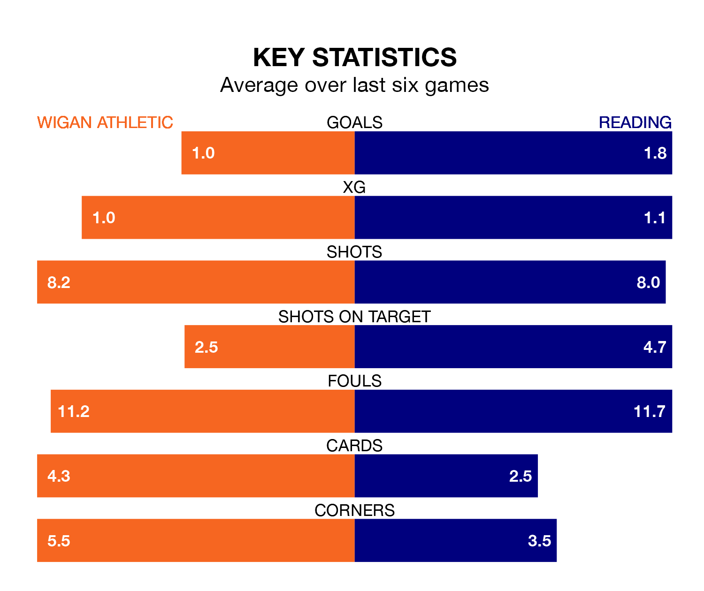

Reading face Wigan Athletic on Saturday seeking to protect their long unbeaten run in EFL League One.
The Royals are unbeaten in six, with two wins and four draws, ahead of the 3pm kick-off.
They face a Wigan team who have won one and drawn two over the same number of games.
In the last 10 years, Wigan and Reading have played each other on 12 occasions. Wigan won three of them, Reading six, and they drew three times.
On average, the Latics scored 1.1 goals and the Royals 1.3 in those matches.
Their last meeting was on December 23, when Reading won 2-0 at home.
Reading are 20th in the table after 25 games, of which they have won seven and drawn six, earning 27 points.
Wigan are 10 places ahead of the Royals in 10th, with 10 wins and six draws putting them on 36 points.
With 36 goals in 26 games so far this season, Athletic are scoring more than average in the league with 1.4 goals per game. And they are conceding fewer than average, letting in 31 goals at a rate of 1.2 per game.
The visitors are also above average scorers, with 1.4 goals per game, compared to a league average of 1.3. They have conceded 1.6 goals per game.
Wigan's last match was on January 13, a 1-1 draw against Northampton Town, with Josh Magennis getting the goal for the Latics.
Reading beat Exeter City 3-2 last time out, on January 1, with Alex Hartridge (own goal), Femi Azeez and Harvey Knibbs on the scoresheet.
Saturday's match will be refereed by Tom Reeves, who has taken charge of nine EFL League One games so far this season, issuing two red cards and booking 33 players. He has awarded three penalties.
The last Wigan game Reeves refereed was a 4-0 away win against Bolton Wanderers on August 19. His last Reading match was their 4-1 loss away at Blackpool on September 23.
Updated: 13:09 (UTC), 17/01/24